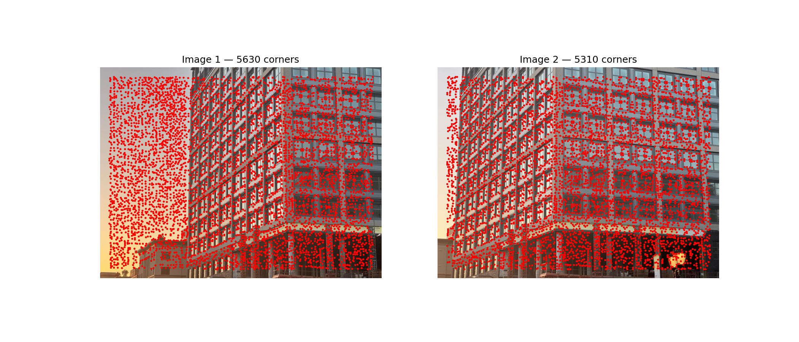
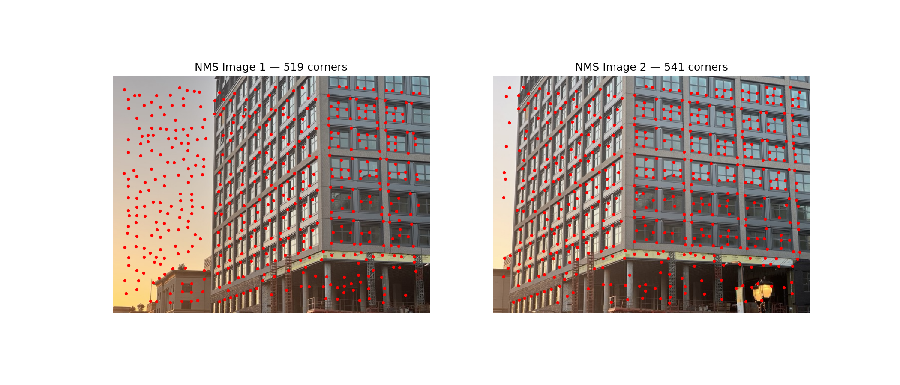
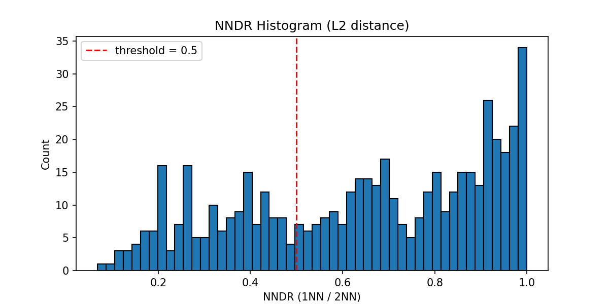
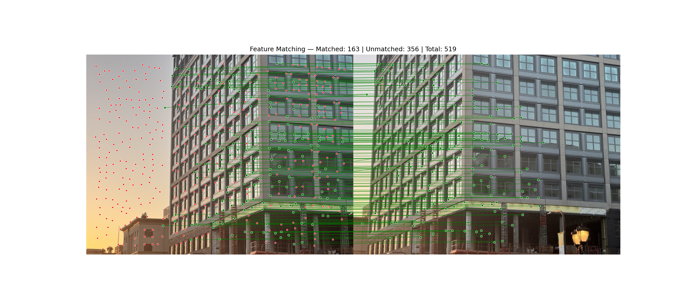
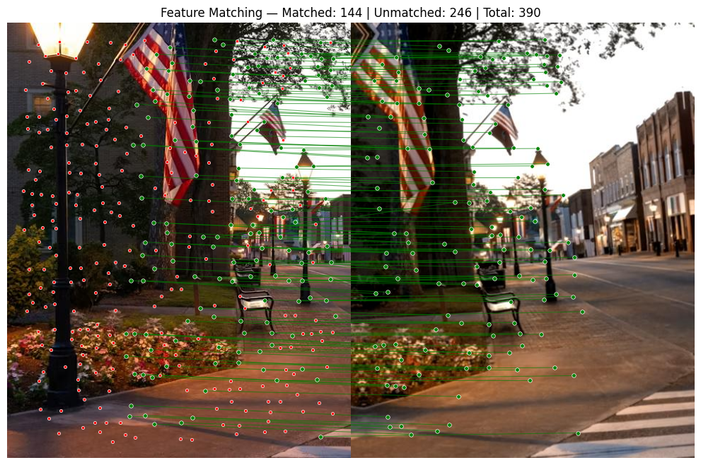
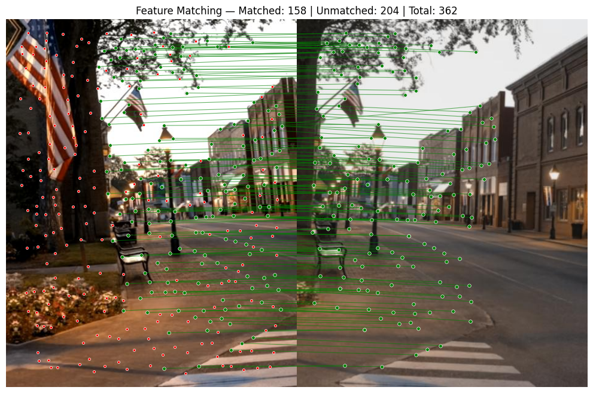
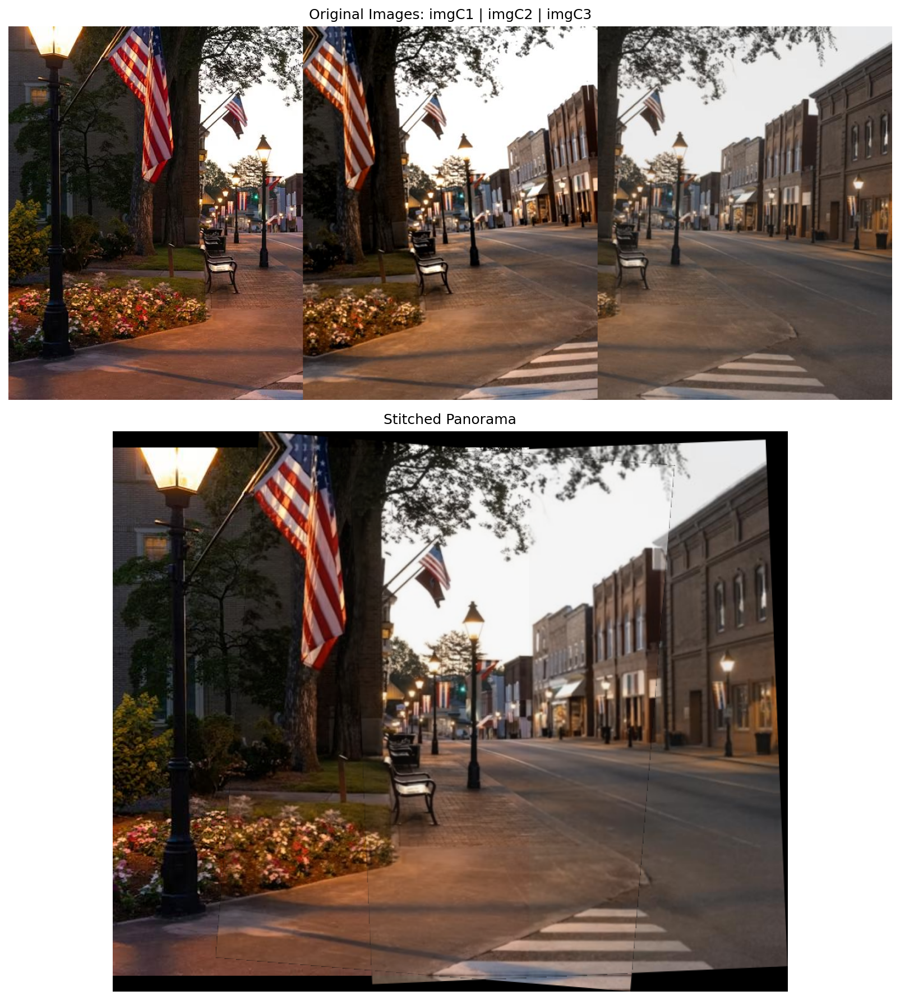

HW2: Automatic Feature Matching
Himanshu Jhawar (hj2713)
COMS4732W Computer Vision 2
Overview
This project implements an automatic feature matching pipeline:
- Step 0: Capture & display 2 images
- Step 1: Harris Corner Detection (provided
harris.py, single scale)
- Step 2: Non-Maximal Suppression (NMS) via
scipy.ndimage.maximum_filter
- Step 3: Feature Descriptor Extraction — 40×40 RGB → 8×8×3 (192-dim), bias/gain normalized
- Step 4: Feature Matching — Lowe's NNDR with L2 (Euclidean) distance
- Extra Credit: 3-image panorama stitching with RANSAC homography
HW Libraries: numpy, matplotlib, scikit-image (resize, corner_harris),
scipy (maximum_filter, cdist), Pillow (EXIF orientation fix)
Extra Credit Libraries: scikit-image (ransac, ProjectiveTransform, warp)
Hyperparameters
| Parameter | Value |
|---|
| Harris edge_discard | 20 px |
| NMS window size | 20 px |
| Descriptor | 40×40 → 8×8×3 RGB (192-dim) |
| Similarity metric | L2 (Euclidean distance) |
| NNDR threshold | 0.5 |
Scene 1 — HW Staff Example Images
Step 0: Original Images — Two staff-provided input images displayed side-by-side

Step 1: Harris Corner Detection — Detected corners overlaid on both images (red dots)

Step 2: Non-Maximal Suppression — Corners after NMS (window size = 20), only local maxima retained

Step 4.1: NNDR Histogram — Distribution of nearest-neighbor distance ratios with threshold (L2 metric)

Step 4.2: Feature Matches (Option 2) — Green lines = matches, red dots = unmatched

Step 4.3: Top 5 Best Matches — img1 feature | 1NN from img2 | 2NN from img2 (RGB patches)

Scene 2 — Custom Scene
Step 0: Original Images — Two personal photos displayed side-by-side

Step 1: Harris Corner Detection — Detected corners overlaid on both images (red dots)

Step 2: Non-Maximal Suppression — Corners after NMS (window size = 20), only local maxima retained

Step 4.1: NNDR Histogram — Distribution of nearest-neighbor distance ratios with threshold (L2 metric)

Step 4.2: Feature Matches (Option 2) — Green lines = matches, red dots = unmatched

Step 4.3: Top 5 Best Matches — img1 feature | 1NN from img2 | 2NN from img2 (RGB patches)

Extra Credit — 3-Image Panorama Stitching
Input Images — 3 overlapping images (imgC1, imgC2, imgC3) used for panorama
Feature Matching — Matches between pairs (C1↔C2 and C2↔C3) for homography estimation
C1 ↔ C2

C2 ↔ C3

Method — Harris → NMS → descriptors → NNDR → RANSAC → warp → blend
Pipeline: Harris corners → NMS → RGB descriptors → NNDR matching on pairs
(C1↔C2, C2↔C3) → RANSAC homography (skimage.measure.ransac) →
chain H₁₃ = H₁₂ × H₂₃ →
inverse warp (skimage.transform.warp) → average blending in overlap regions.
Stitched Panorama — Final 3-image panorama using features from Steps 1–4

COMS4732W Computer Vision 2 · HW2 · Himanshu Jhawar (hj2713)